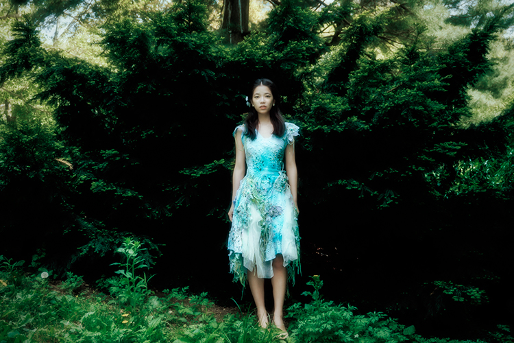
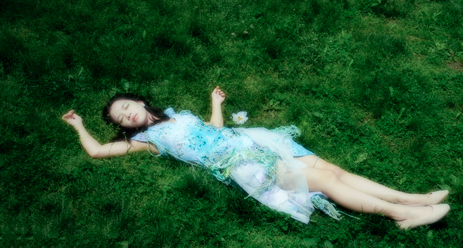

Decomposing in the Spring

The concept revolves around the reincarnation of life embodied through decay, a pivotal element in the cycle of life symbolizing the intricate connection between deceased organisms and new life forms. To convey this theme effectively, I opted for tie-dye techniques employing shades of green, blue, and purple. These colors, vibrant yet imbued with a sense of decay, serve to illustrate the dual nature of life's continual transformation.
 In selecting the fabric, I deliberately chose materials reminiscent of a net's structure and meticulously tore them into irregular shapes. The unique shapes of the fabric fragments were chosen for their resemblance to enlarged plant cells, mirroring the natural order of life. The deliberate tearing of these pieces signifies the gradual breakdown of cells, representing the inevitable process of death and decay.
Moreover, I utilized fire in many places to create a decaying texture and a sense of fragmentation. When choosing the shooting locations, I opted for grassy fields and trees symbolizing spring. My dress represents decay, while the surrounding environment symbolizes new life.